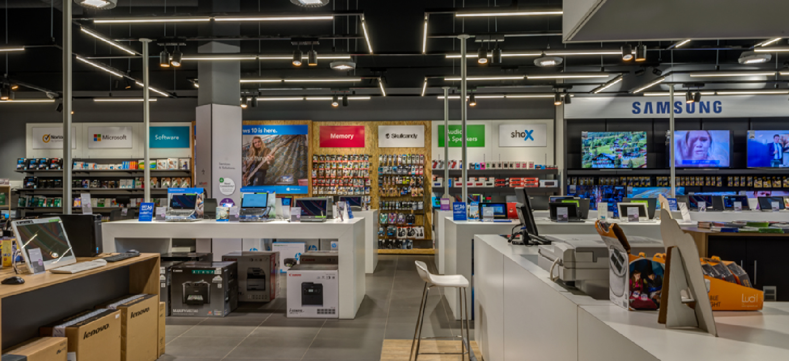

About Incredible Connection
Incredible Connection is one of South Africa’s much-loved technology retail stores. If you’re looking for the widest range of leading national and international brands, Incredible Connection is the place to go. Our X-factor Yes, we have a comprehensive range of innovative products. Yes, our range extends from practical solutions for any home or business environment to specialist products that push the boundaries of technology. If you want tech, we’ve got it. What really sets us apart is our service offering. Our technical expertise together with top-notch service and after-sales support is what keeps our customers coming back; time after time, year after year. We bring technology solutions to life At Incredible Connection, we like to make tech easy. It’s why we have our very own Techxperts to provide expert advice as well as assistance with installations, upgrades and technical repairs. Whether you need help in-store or on-site (home or office), with Incredible Solutions you can consider any technology problem solved, in one of the best repair turn-around times in the country. So much more than just the best hardware and consumables If the future is about connectivity, Incredible Connection ensures you’re plugged in. From technical services to business rental packages; data contracts, upgrades, Incredible Cloud data storage and a data recovery service. Then we offer a comprehensive on-line shopping experience, a range of payment options, three rewards partners and a worthwhile trade-in programme. Got a question Chat online with a Techxpert to get instant answers to your queries. You can also chat with a consultant on 0860 011 700. We’re here to make tech easy. Incredible Connection is a brand of JD Consumer Electronics and Appliances trading under the registration number 1963/002315/07.
Brands Sold At Hifi Corp:
MICROSOFT
MICROSOFT SURFACE
HP
APPLE
SAMSUNG
RAZER
RING
CANON
ACER
LOGITECH
DELL
ASUS
EPSON
Specials:
PRICES VALID 21 JUNE - 11 JULY 2021


Interiour Pictures Incredible Connection

Contact us:
📍 Shop 319 Pavillion Shopping Mall, Harry Gwala Rd, Westville, Durban, 3611📍
📞 031 275 5600 📞
✉️ incredible@jdg.co.za ✉️
Trading hours:
Mon-Fri: 9am - 6pm
Saturday: 9am - 6pm
Sunday: 9am - 6pm
Public Holidays: closed
Please visit for more info